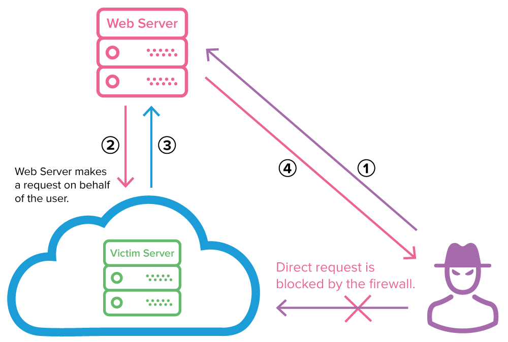

What is Server-Side Request Forgery?
Server-Side Request Forgery (SSRF) occurs when an attacker can make a server perform requests to an unintended location. This vulnerability allows attackers to force the server to connect to internal services or external systems they shouldn't have access to.

Internal Services
Accessing internal APIs, databases, or admin interfaces
Cloud Metadata
Accessing cloud provider metadata endpoints
Common SSRF Vectors
- URL input fields (webhooks, integrations)
- File upload functionality that processes remote URLs
- PDF generators that fetch remote content
- Document/image processors that load external resources

CTF Challenge
Objective: Exploit an SSRF vulnerability in the Juice Shop to access internal resources.
Hint: Look for functionality that fetches remote resources, like the image URL field in product reviews.
Hint: Look for functionality that fetches remote resources, like the image URL field in product reviews.
http://localhost:3000/api/image-upload
{"url": "file:///etc/passwd"}
{"url": "file:///etc/passwd"}